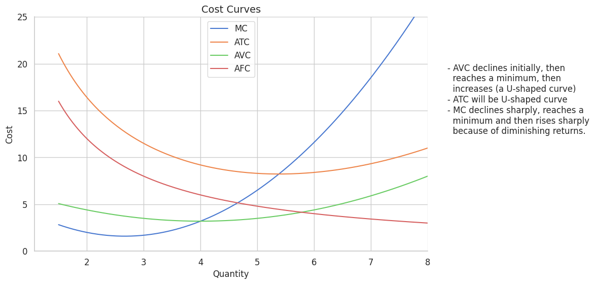
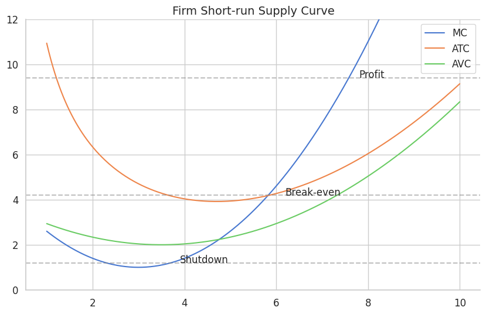
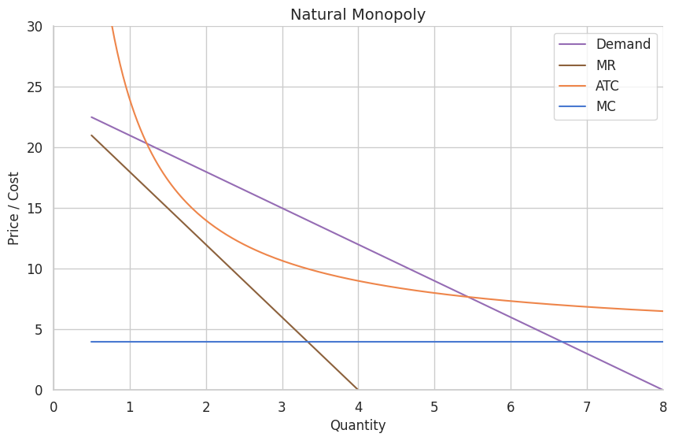
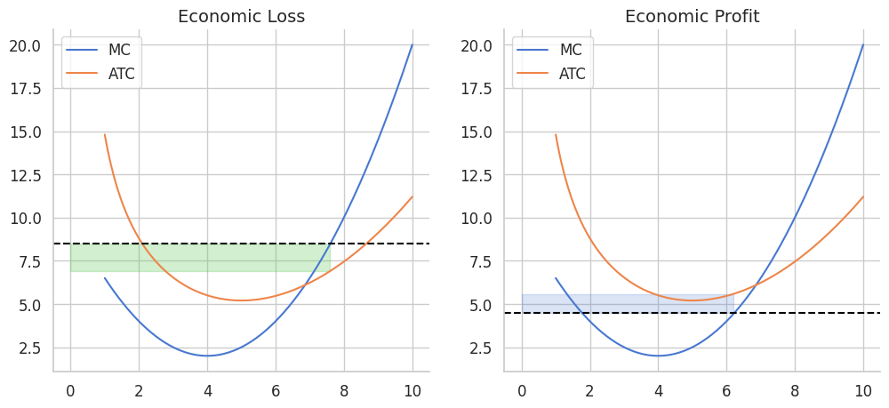
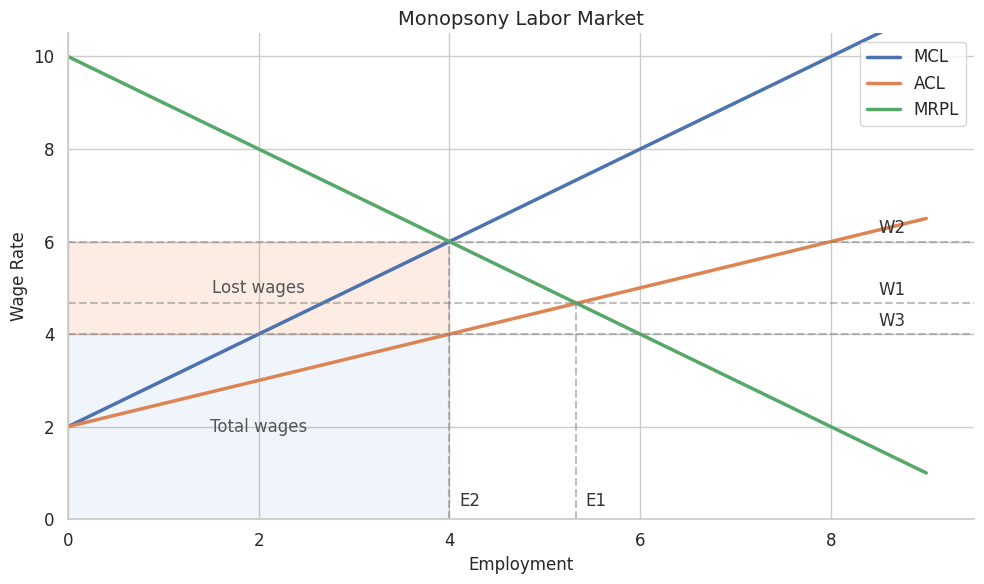

AP Microeconomics
High-difficulty concepts and logic-heavy modules. Optimized for quick reference before exams.
I. Basic Concepts
- Economics: The study of how societies allocate scarce resources to produce and distribute goods.
- Macroeconomics: Overall economic performance — inflation, GDP, unemployment.
- Microeconomics: Behavior of individual entities — firms and households.
- Positive Economics: Describes facts. “What is.”
- Normative Economics: Involves value judgments. “What ought to be.”
Scarcity & Opportunity Cost
- Scarcity: Limited resources (
Land,Labor,Capital,Entrepreneurship) cannot meet unlimited wants. - Opportunity Cost: The value of the next best alternative foregone.
II. Economic Systems & Models
The Three Fundamental Questions
- What to produce?
- How to produce?
- For whom to produce?
Circular Flow Model
- Product Market: Households are buyers; Firms are sellers.
- Factor Market: Firms are buyers; Households are sellers.

III. Utility & Elasticity
Utility Maximizing Rule
A rational consumer allocates income so the last dollar spent on each good yields equal Marginal Utility:
Elasticity Formulas
| Type | Formula | Key Logic |
|---|---|---|
| PED | %ΔQd / %ΔP | > 1 Elastic · = 1 Unit Elastic (TR is max) |
| PES | %ΔQs / %ΔP | Seller responsiveness to price changes |
| YED | %ΔQd / %ΔIncome | > 0 Normal Good · < 0 Inferior Good |
| XED | %ΔQdA / %ΔPb | > 0 Substitutes · < 0 Complements |
IV. Product Market Efficiency
Productive Efficiency
“How to produce.” Production occurs at the lowest possible cost.
At this point resources are used with zero waste. In the long run, perfectly competitive firms are forced here.

Allocative Efficiency
“What to produce.” Resources yield the mix of goods most wanted by society.
- Price () represents Marginal Benefit — the value society places on the last unit.
- Marginal Cost () represents Opportunity Cost — the value of alternatives sacrificed.
| Condition | Meaning | Implication |
|---|---|---|
| Under-allocation | MB > MC; increase output (common in monopoly) | |
| Over-allocation | MB < MC; reduce output |

V. Market Structures
Natural Monopoly
Continuous economies of scale — ATC is a downward slope.
| Regulation | Rule | Result |
|---|---|---|
| Unregulated | Profit max; highest price; large DWL | |
| Fair Return | Normal profit (break-even) | |
| Socially Optimal | Allocative efficiency; firm runs at a loss |

Monopolistic Competition
- Short Run: Behaves like a monopoly — profit or loss.
- Long Run: Entry/exit shifts demand until (tangent point).
- Inefficiency: Always has excess capacity (not at min ) and .

VI. Factor Market
Hiring Rule
A firm hires until:
- MRP (Marginal Revenue Product): — the benefit of one more unit of labor.
- MFC (Marginal Factor Cost): — the cost of one more unit of labor.
Monopsony
Single buyer of labor. Supply (Wage) because hiring one more worker raises the wage for all workers.
Decision: Find where , then trace down to the supply curve for the wage.

Least-Cost Combination
VII. Market Failures & Externalities
| Type | Condition | Problem | Solution |
|---|---|---|---|
| Positive Externality | Under-allocation | Subsidy | |
| Negative Externality | Over-allocation | Tax |